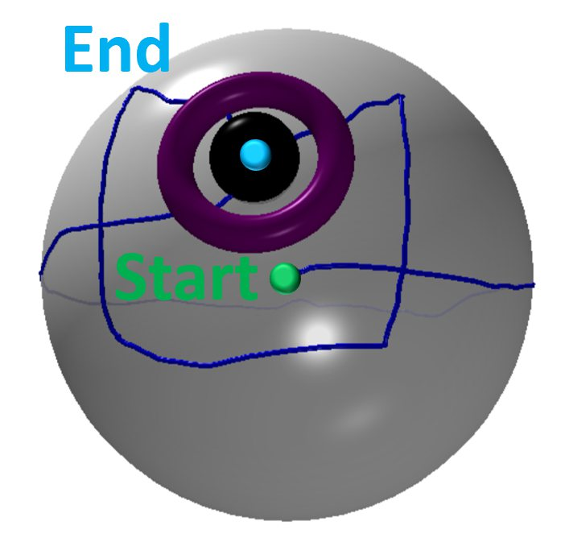

Animatronic Eyeball
For my senior design project at Vanderbilt University, my team and I partnered with ANIMAX Designs—an animatronic company that works with major entertainment clients like Disney and Universal—to create a fully functional animatronic eyeball. The eye is capable of 360-degree rotation on any axis and can actively track its orientation in space.
My Roles
Structure Design
-
Designed and 3D printed motor mounts, housing, and connectors
-
Laser-cut MDF and aluminum frame for lightweight support
-
Designed the internal electronics compartment for IMU sensor
Live Visualization
-
Built real-time VPython tool to visualize IMU quaternion data
-
Converted sensor output into animated 3D motion of the pupil

Circuit Design
-
Designed the circuitry with two Wi-Fi-connected ESP8266 microcontrollers. Powered by 24V supply (motors) and 3xAAA batteries (internal electronics)
-
Fully hand-soldered, compact layout for internal electronics